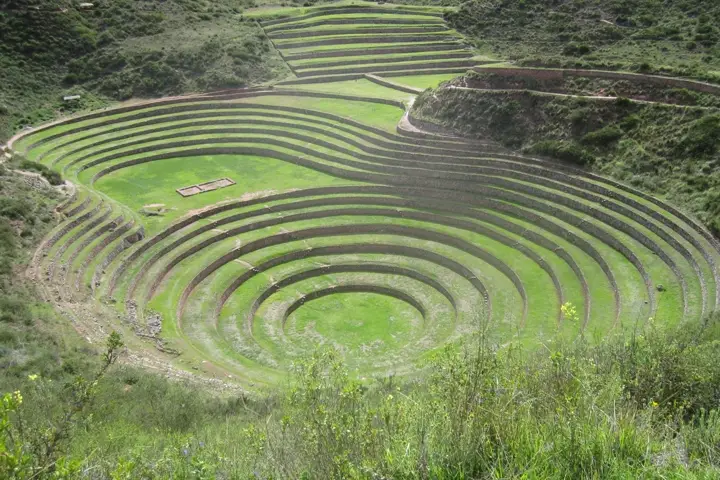
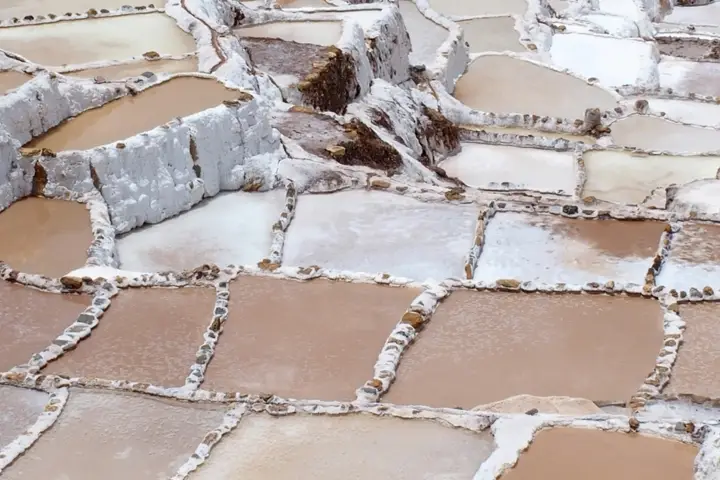

Valle Sagrado de los Incas
- Duración1 día
- DificultadFácil
- Alturahasta 3,760 m



Resumen
Un día por el valle del Urubamba: Pisac, Urubamba, Ollantaytambo y Chinchero de regreso.
Lugares que visitarás
- Pisac
- Urubamba
- Ollantaytambo
- Chinchero
Itinerario De referencia · por confirmar
01Valle Sagrado
- Recojo en Cusco.
- Mirador de Taray y Pisac.
- Almuerzo en Urubamba.
- Ollantaytambo.
- Chinchero y regreso a Cusco.
Qué incluye Por confirmar
- Recojo en tu hotel de Cusco
- Transporte turístico
- Guía
- Boleto turístico o entradas
- Comidas no indicadas
Qué llevar
- Ropa abrigadora por capas
- Protector solar
- Agua
- Soles en efectivo
Precios
| Servicio | Precio por persona |
|---|---|
| Servicio compartido (grupo) | [por confirmar] |
| Servicio privado | [por confirmar] |
Preguntas frecuentes
¿Cuál es la mejor época para viajar a Cusco y Machu Picchu?
La temporada seca, de mayo a septiembre, tiene cielos más despejados. De diciembre a marzo llueve más, pero hay menos gente.
¿Qué es el soroche y cómo evitarlo?
Es el malestar por la altura: Cusco está a unos 3,400 m. Descansa el primer día, come liviano, toma bastante agua y deja los tours más altos para después.
¿Con cuánta anticipación reservo Machu Picchu?
Las entradas tienen cupos diarios. En temporada alta conviene reservar con semanas de anticipación, y el Camino Inca con meses.
¿El Camino Inca está abierto todo el año?
No: cierra en febrero por mantenimiento. El resto del año necesita permiso oficial, que solo tramita una agencia autorizada.
-
 Medio día
Fácil · 3,400 a 3,700 m
City Tour Cusco
Qorikancha · Catedral · Sacsayhuamán · Q'enqo
Precio por confirmarVer tour →
Medio día
Fácil · 3,400 a 3,700 m
City Tour Cusco
Qorikancha · Catedral · Sacsayhuamán · Q'enqo
Precio por confirmarVer tour →
- Medio día Fácil · 3,500 m Maras y Moray Moray · Salineras de Maras Precio por confirmarVer tour →
-
 1 día
Exigente · más de 5,000 m
Montaña de 7 Colores
Cusipata · Vinicunca
Precio por confirmarVer tour →
1 día
Exigente · más de 5,000 m
Montaña de 7 Colores
Cusipata · Vinicunca
Precio por confirmarVer tour →